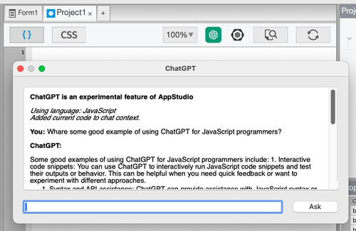

AI Coding Assistant
This is an experimental feature. It is subject to change or withdrawal at any time.
AppStudio's AI Coding Assistant allows you to using ChatGPT as part of your development process.
ChatGPT can be a valuable tool for programmers in various ways. Here are a few examples:
- Code Assistance: You can use ChatGPT to get code suggestions, find syntax errors, or brainstorm solutions to coding problems. Simply explain the issue or describe the desired functionality, and ChatGPT can provide insights and suggestions.
- Learning JavaScript Concepts: If you are new to JavaScript or want to deepen your understanding, you can ask conceptual questions to ChatGPT. It can explain JavaScript concepts, provide code examples, or clarify any confusion you may have.
- Code Optimization: ChatGPT can assist in optimizing your JavaScript code. Describe your code snippet or algorithm to ChatGPT, and it can offer suggestions on how to make it more efficient or provide alternative approaches.
- API Integration: When working with APIs or SDKs in JavaScript, ChatGPT can help you with syntax, API usage, or troubleshooting common issues.
Remember, while ChatGPT can be helpful, it's important to review and validate any code suggestions provided and exercise caution when implementing them.
(Note: The above paragraph was written by ChatGPT itself)
How to use it
The Code Window has a ChatGPT icon at the top. Click on that, and this window opens:
{kind=link}

Type your question into the input box and click Ask to send it to ChatGPT. The time it takes to respond will depend on how busy the ChatGPT servers are - it could take 30 seconds.
When you open the ChatGPT window, AppStudio sends your code and the language you are using to ChatGPT. It will answer questions based on it being able to scan your code. When you refer to "code", it knows to use the code in your current Code Window.
Sample Questions to ask
- How many lines in my code?
- How can I make this code better?
- Give me a function to convert MMDDYY to a Unix date.
- How does AppStudio's NSB.MsgBox work?
Notes
- This service is included with your AppStudio subscription. We get billed by OpenAI based on the amount of usage. Please restrict your questions to actual coding matters!
- We may examine logs and other data to learn how you use this feature.
- Usage is subject to OpenAI's Terms of use
- Abusers of this feature will be locked out from it.
- The AI Coding Assistant uses the gpt-3.5-turbo version of ChatGPT.
- Results from the AI Coding Assistant can be completely inaccurate. Use with care!
Known Issues
- MacOS: To scroll while selection, move the cursor below the entire ChatGPT window.
- MacOS: Paste to the input box does not work - you need to type your prompt in.
- MacOS: Copy does not always work the first time.
Support
Got questions about AppStudio and ChatGPT? We've got a AI Assistant Category on our Forum just for that. Use it for…
- Questions on how to use it
- Interesting questions you’ve asked
- Interesting answers you’ve received
- Anything else you find about it that others may want to know